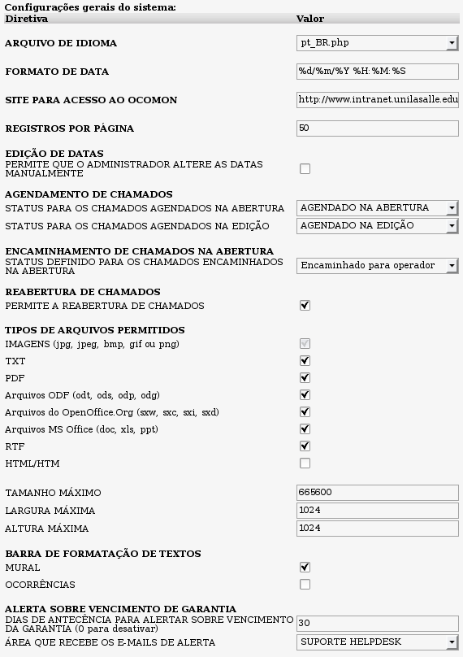
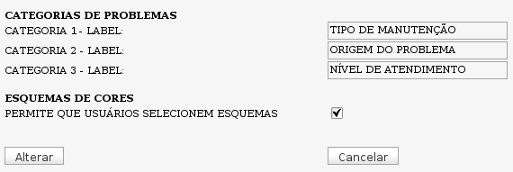
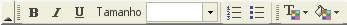

Configurações gerais (Admin -> Configurações -> Configurações gerais)


Tela de configurações gerais do sistema - versão 2.0rc3
Descrição das opções de configuração:
ARQUIVO DE IDIOMA: Caixa de seleção para o idioma do sistema. Aqui será exibidos todos os arquivos de idioma disponíveis. Para criar um novo arquivo de idioma, basta fazer uma cópia do arquivo pt_BR.php (em ocomon/includes/languages) e subtituir as entradas de tradução pelo valor correspondente ao idioma pretendido.
FORMATO DE DATA: Formato da exibição da data pelo sistema. Esse formato segue o padrão PHP.
SITE PARA ACESSO AO OCOMON: Endereço web para acesso ao sistema OcoMon dentro de sua rede. O valor informado nesse campo será utilizado pelo sistema como referência para variáveis de ambiente e rodapé de e-mails enviados automaticamente.
REGISTROS POR PÁGINA: Defina aqui quantos registros serão exibidos por página na área de inventário do sistema.
EDIÇÃO DE DATAS: A marcação dessa opção permite que operadores com privilégios de administrador possa alterar as datas de abertura e encerramento dos chamados de forma manual. Para garantir a lisura e confiabilidade do sistema, não é recomendado que se habilite essa função.
AGENDAMENTO DE CHAMADOS: Essa opção define como serão tratados os chamados agendados no sistema quanto ao controle do tempo de resposta e solução através do tipo de status que forem atribuídos para cada tipo de agendamento. O Ocomon permite que um chamado seja agendado no ato de sua criação no sistema ou após ele já estar aberto no mesmo. Para cada um desses casos é necessário atribuir um diferente status de controle.
Para o controle de SLAs funcionar adequadamente, é necessário a criação de mais dois STATUS (menu Admin->Ocorrências->Status) específicos, um para ser utilizado automaticamente no agendamento de chamados na abertura dos mesmos e outro para ser utilizado automaticamente no agendamento de chamados já abertos(na edição).
O status a ser criado para agendamento na abertura deverá, OBRIGATORIAMENTE, ter dependência igual a "SERVIÇO DE TERCEIROS" ou "A ÁREA TÉCNICA".
O status a ser criado para agendamento na edição deverá, OBRIGATORIAMENTE, ter dependência igual a "INDEPENDENTE" ou "AO USUÁRIO".
- STATUS PARA CHAMADOS AGENDADOS NA ABERTURA: Após a criação dos novos status, conforme descrição àcima, selecione aqui o status criado para agendamentos na abertura de chamados.
- STATUS PARA CHAMADOS AGENDADOS NA EDIÇÃO: selecione aqui o status criado para agendamentos provenientes de edição de chamados já abertos.
ENCAMINHAMENTO DE CHAMADOS NA ABERTURA: Defina aqui qual será o status que terão os chamados encaminhados para os técnicos, diretamente da tela de abertura de chamados. O status definido aqui será assumido automaticamente pelos chamados que forem encaminhados para técnicos apartir da tela de abertura.
REABERTURA DE CHAMADOS: Marcando essa opção, o sistema permitirá a re-abertura de chamados já encerrados no mesmo.
TIPOS DE ARQUIVOS PERMITIDOS: Aqui é possível definir, dentre as opções possíveis, os tipos de arquivos que serão aceitos como anexos nos chamados. Além disso, é possível também, definir altura e largura máxima (para o caso de arquivos de imagens) e tamanho máximo permitido. Arquivos de imagens são aceitos por padrão no sistema.
BARRA DE FORMATAÇÃO DE TEXTOS: O OcoMon permite que seja utilizada barra de formatação para a digitação dos textos no sistema. As alternativas possíveis são o
Mural (área de recados) e
Ocorrências (abertura de chamados, edição e encerramento). Por padrão, apenas a área do mural vem com a barra de formatação habilitada.

ALERTA SOBRE O VENCIMENTO DE GARANTIA: O OcoMon envia e-mails de forma automática informando sobre o vencimento das garantias dos equipamentos. Nessa tela é possível definir a quantidade de dias de antecedência com que os e-mails serão enviados antes do vencimento das garantias. Aqui também será definida para qual área de atendimento os e-mails serão enviados. Até a versão 2.0rc3, o sistema só alerta sobre os vencimentos das garantias de componentes avulsos.
CATEGORIAS DE PROBLEMAS: O OcoMon permite que os sejam criados até 3 níveis de
categorias para os
problemas cadastrados. Esse tipo de classificação facilita o agrupamento dos chamados por até 3 critérios distintos. Exemplo: Posso definir a categoria 1 quanto ao tipo de manutenção: PREVENTIVA OU CORRETIVA. Posso definir a categoria 2 quanto ao objeto de atendimento: HARDWARE OU SOFTWARE. Etc...
Nessa tela você apenas irá denominar cada uma das categorias a serem utilizadas.
Ex: por padrão, o nome da primeira categoria é "CATEGORIA 1". Nesse caso você pode alterar para "TIPO DE MANUTENÇÃO" (apenas sugestão). Na tela de cadastro de problemas é possível criar as sub-categorias desses 3 níveis possíveis.
Para criar os tipos dentro de cada categoria acesse:
menu Admin->Ocorrências->Problemas->Novo->Gerenciar
ESQUEMA DE CORES: O OcoMon permite sua personalização apartir da criação de esquemas de cores definidos pelo próprio administrador. O OcoMon já traz alguns esquemas prontos para serem escolhidos. Nessa opção, o administrador pode definir se permite que os usuários do sistema possam escolher um esquema dentre os disponíveis ou se utilizarão somente o tema que o administrador definir como padrão do sistema.